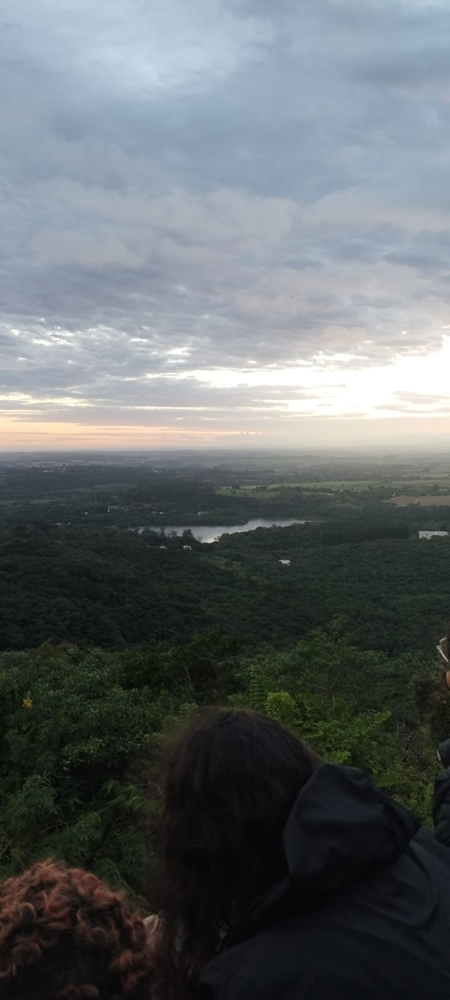
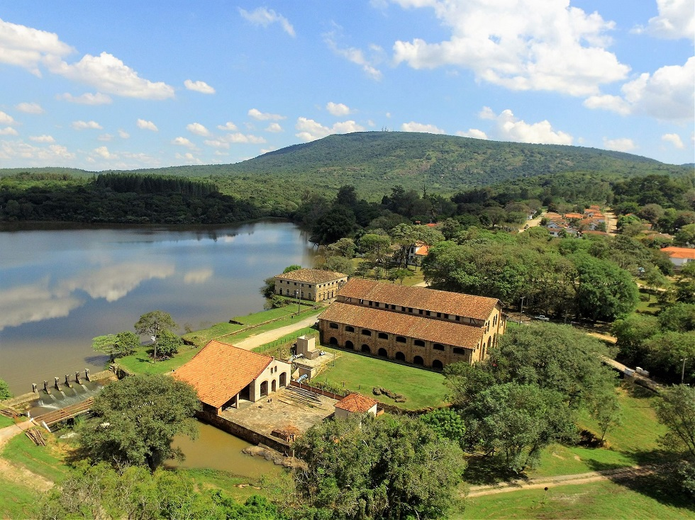
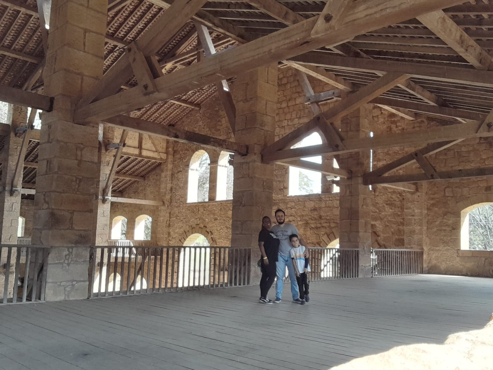
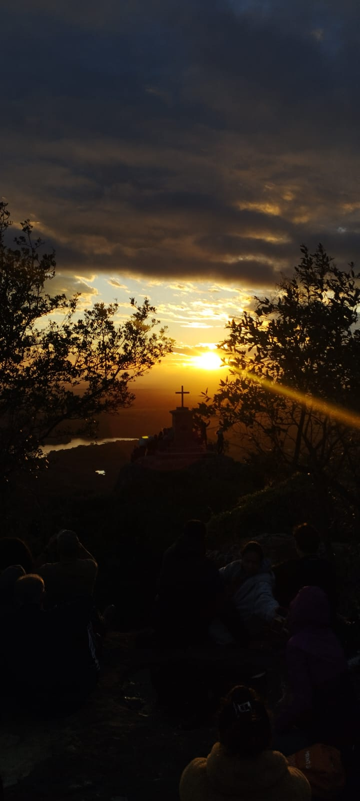
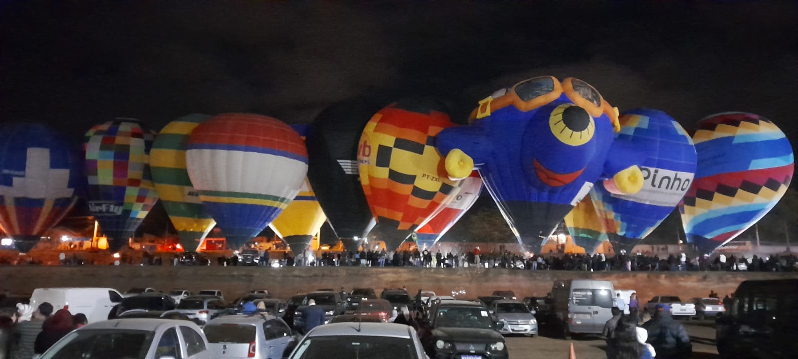
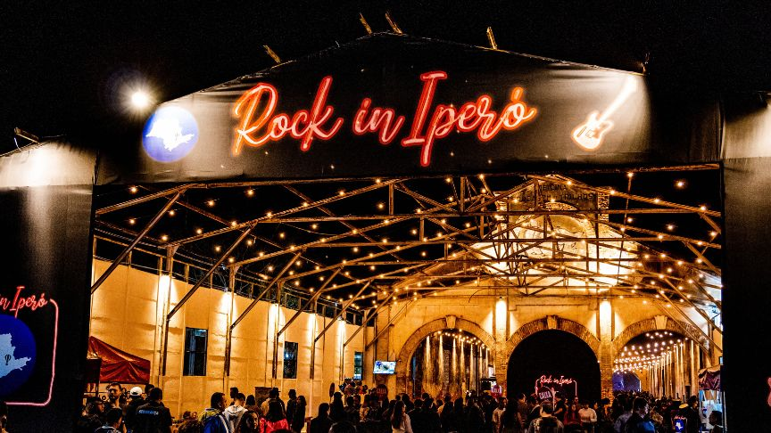

Área de preservação ambiental que abriga uma rica biodiversidade, trilhas ecológicas e importantes patrimônios históricos da região. Fotografia de autoria própria

Importante marco histórico brasileiro, conhecida por sediar a primeira siderúrgica do país e preservar construções históricas.

Construção histórica ligada à antiga Real Fábrica de Ferro de Ipanema, representando parte da história industrial do Brasil. Fotografia de autoria própria

Ponto turístico com vista panorâmica da região, oferecendo belas paisagens e contato com a natureza. Fotografia de autoria própria

Local conhecido pela prática de balonismo e pela realização de eventos que atraem visitantes de diversas regiões. Fotografia de autoria própria

Patrimônio histórico que representa a importância da ferrovia para o desenvolvimento econômico e social do município, espaço foi reformado e agora recebe eventos.